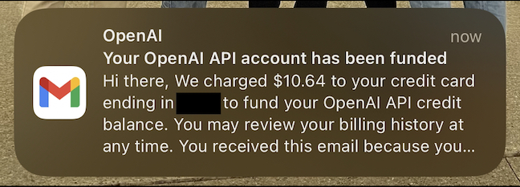

Voice to text to image to wonderment.
niplav and I were discussing what makes good living room decor. It must be thought-provoking and not distracting. Movement is nice, but too much or too quickly violates the distraction rule. The idea of an aquarium or terrarium was brought up. niplav then came up with the idea of a conversation visualizer (CV): create an image based on the last few minutes of conversation and display it for all to see.
The CV consists of three parts that build off of each other:
Throw this in a simple while loop that continues to go so long as there aren't any errors and power is maintained.
I used OpenAI and its API to keep everything in the same ecosystem: Whisper for transcription, GPT for summarization, and DALL·E for image generation.
Code can be found here: visualization.py.
Here are the not-quite-foolproof-because-if-you're-reading-this-you-probably-have-some-technological-ability instructions to get the software working:
Hardware is user-dependent and offers a few options:
The first full run through of the record-transcribe-summarize-visualize logic was after watching Pearl Jam's Do the Evolution.
Transcription was:
So it seems like everything leads to war there was the nuclear bomb going off in the end the people marching Planes dropping bombs things like that. I Like the first part of Starting with fish to dinosaurs to cavemen. It also seemed like a progressive rise in Like power it starts with the fish and then it ends up politicians are kind of at the end along with military power It seems like it progresses like that all throughout It's basically it starts with war and it ends with war and the whole time It's just power is escalating and It's it probably the message is that
Summary was:
the conversation discusses how everything seems to lead to war, with references to nuclear bombs, marching people, and planes dropping bombs. The first part of the conversation mentions the progression from fish to dinosaurs to cavemen, highlighting a rise in power. It is noted that politicians and military power are at the forefront towards the end. The conversation concludes that there is a continuous escalation of power and suggests that the message may be that war is inevitable throughout history.
And the image was: